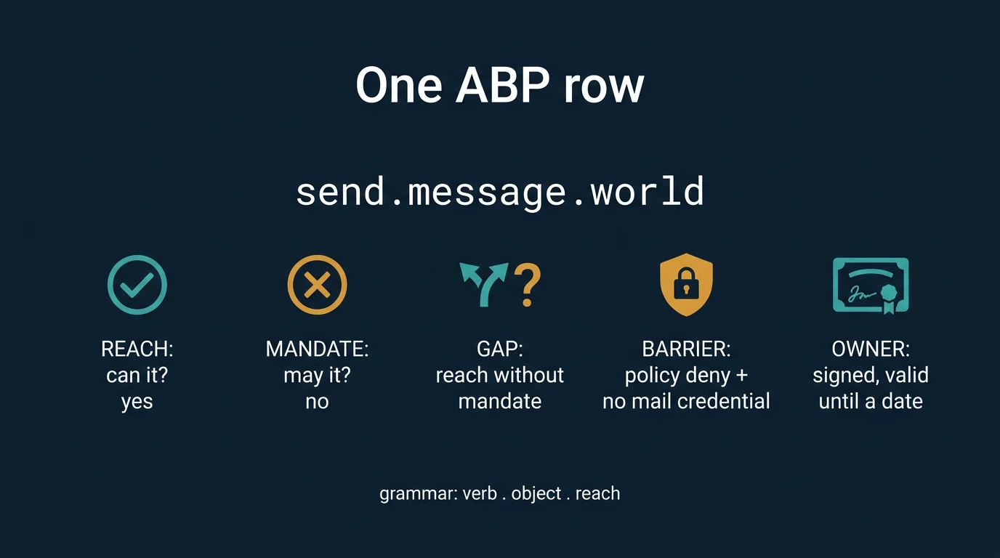
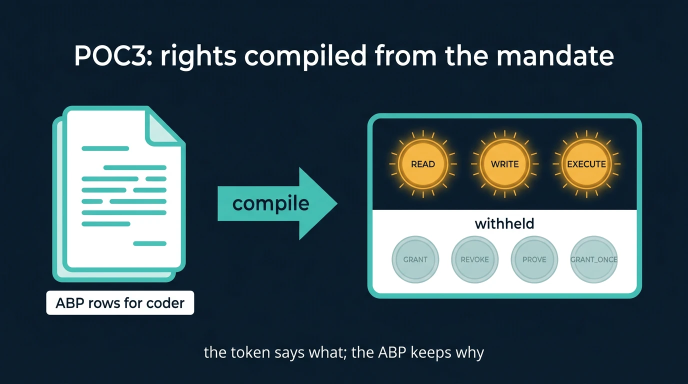
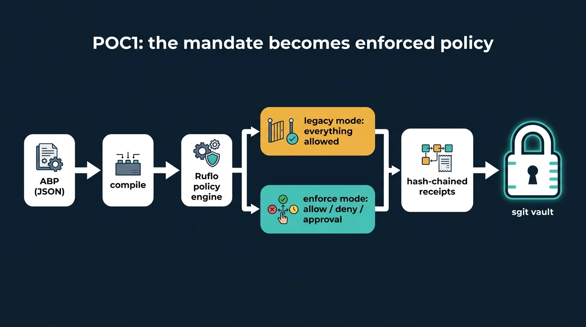

The mechanism, with the file names
One mandate document, several enforcers. One vault model, several writers. Everything on this page maps to a file in the repository.
flowchart TB
subgraph hosts["Hosts: where agents run"]
CC["Claude Code
(Ruflo as MCP / plugin)"]
GH["GitHub Actions
(.github/workflows/pocs.yml)"]
BR["Browser
(site/app, served from the vault)"]
end
subgraph orch["Orchestration and policy"]
RF["Ruflo swarm: queens + workers"]
PE["Ruflo AgenticPolicyEngine
@claude-flow/security"]
MH["MetaHarness scaffold
.claude/settings.json"]
end
subgraph mem["Memory"]
RV["Ruflo memory / RuVector
.swarm/memory.db, ruvector.db"]
WASM["@ruvector/wasm
VectorDB in the page"]
end
subgraph metal["Below the host"]
RVM["RVM: capabilities, 7 rights, witness log"]
end
subgraph ours["sgit.ai"]
ABP["ABP
abp/examples/*.abp.json
abp/schema · abp/vocabulary · abp/mapping.json"]
VP[("ruv-pocs-public")]
VM[("ruv-pocs-memory")]
end
CC --> RF --> PE
GH --> PE
BR --> WASM
RF --> RV
ABP -- "poc1 compile.mjs" --> PE
ABP -- "poc3 abp_to_rvm.py" --> RVM
MH -- "poc5 harness-to-abp.mjs" --> ABP
PE -- receipts --> VP
ABP --> VP
VP -- "app/ + data/" --> BR
RV -- "poc2 run.sh: branch per role" --> VM
CC -- "poc6: session record" --> VM
classDef ours fill:#d9f1ee,stroke:#0f766e,color:#1a1917
class ABP,VP,VM ours
An ABP describes one agent system in one deployment. For each role it lists rows, and each row is one capability (a primitive from the vocabulary) with:
yes · no · approvalAt the top: deployment, owner (the named person who signs), valid_until (a licence to operate expires). A row with reach, a mandate other than yes, and no barrier is a gap; the CI gate fails on gaps.
{ "capability": "send.message.world",
"reach": true, "mandate": "no",
"why": "agents draft, a person sends",
"barrier": "policy deny + no mail credential in the sandbox" }Schema: abp/schema/abp.schema.json. Example: abp/examples/ruflo-sparc-swarm.abp.json (6 roles, 36 rows).

23 primitives, each with an undo class. A specific path, host or mailbox is an instance of a primitive, never a new one, which is what keeps the document short enough to sign.
read write create delete execute send receive authenticate-as grant revoke
file process network-endpoint credential message record repository budget schedule
self the agent's own process · project the working tree · host the machine · tenant the organisation's systems · allowed a listed set · world anything else
Vocabulary: abp/vocabulary/capabilities.json, promoted from RiskMandate's published capability map without renaming.
The same row becomes different things in different enforcers. The mapping lives in abp/mapping.json; the action strings are our convention for the trace, and Ruflo matches rules on whatever strings the caller emits.
| Target | rUv surface (verified 14 Oct 2026) | Our mapping | POC |
|---|---|---|---|
| Ruflo policy engine | AgenticPolicyEngine: modes legacy / observe / enforce; PolicyRule {id, effect, actions[], principals[], resources[], priority, constraints}; setBudget; hash-chained receipts; verifyLedger() | mandate yes → allow; no → deny; approval → require_approval; write.budget.* → setBudget; primitive → action strings | 1 |
| RVM | 7 rights READ, WRITE, GRANT, REVOKE, EXECUTE, PROVE, GRANT_ONCE; no ambient authority; witness log | per-role token rights from mandated rows; withheld list from the rest; gaps | 3 |
| Browser viewer | @ruvector/wasm VectorDB, cosine, HNSW | each row embedded (bag-of-words hash, no model) and searchable | 4 |
| MetaHarness | .claude/settings.json permissions allow/deny, mcpServers, CLAUDE.md rules | each setting → an ABP row; diff both ways | 5 |
| Ruflo claims | ruflo claims list|check|grant|revoke|roles|policies | roles = ABP roles; claims = allowed primitives (next step) | next |
| Ruflo guidance | ruflo guidance compile (CLAUDE.md → policy bundle), gates | our CLAUDE.md is the builder's ABP in prose; compile it and compare | next |
| RuVector MCP | RUVECTOR_MCP_PROFILE=readonly, RUVECTOR_MCP_ALLOW / _DENY | rows on memory tools → allow/deny lists | next |


Published with its read key, on purpose. Holds the ABPs, compiled rules, the POC1 report and receipts, the RVM table, the MetaHarness diff, and the browser app under app/. Every CI run adds runs/<run_id>/. Publishing the read key is irreversible; that is why it is a separate, single-purpose vault.
Private. Agent memory per role under memory/<role>/, written on a branch per role and merged; recorded Claude Code sessions under sessions/<date>/. The key lives only in repository secrets and in the owner's keychain.
Ciphertext under opaque ids. sgit encrypts files client-side with AES-256-GCM before upload; filenames, contents and commit messages are inside the envelope. The vault key is {passphrase}:{vault_id}; there is no reset. Keys are passed to sgit clone on stdin, never as an argument.
sequenceDiagram autonumber participant Dev as developer / CI participant G as abp:gate participant P1 as poc1 run.mjs participant P3 as poc3 abp_to_rvm.py participant P4 as poc4:build participant H as human approver (environment vault) participant VP as ruv-pocs-public participant P2 as poc2 run.sh participant VM as ruv-pocs-memory Dev->>G: compile the ABP, count gaps G-->>Dev: 0 gaps Dev->>P1: evaluate trace in legacy and enforce P1-->>Dev: report.json, rules.json, state-abp.json, ledger valid Dev->>P3: rights per role + withheld + gaps Dev->>P4: app/ with vendored WASM + data/ Dev->>H: approve publish? H-->>VP: sgit write runs/run_id --push, then sgit publish --visibility public Dev->>P2: write coder → branch, push, merge Dev->>P2: write tester → branch, push, merge P2->>VM: encrypted DB files + memory-list.txt P2->>VM: fresh runner clones, restores, runs ruflo memory list VM-->>P2: same entries
The agent that built this repository (a Claude Code session) had its own ABP: abp/examples/builder-agent.abp.json, in prose as CLAUDE.md. It may write files in this repo, run processes, reach the npm and PyPI registries, GitHub and the sgit server, and push to feature branches. It may not send messages to the world (no emails, issues or comments on rUv's repos), and may not print, log or commit a vault key or token. Where the build hit a limit, the note is in build notes; where it had to stop (Ruflo's interactive policy admin), it did not work around it.
| capability | reach | mandate | barrier |
|---|---|---|---|
write.file.project | yes | yes | this repo only |
execute.process.self | yes | yes | npm, pip, node, python in the repo or runner |
send.endpoint.allowed | yes | yes | registries, GitHub, sgit server, rUv's public repos |
write.repository.project | yes | yes | feature branches and PRs; never force-push main |
authenticate-as.credential.tenant | yes | approval | repo secrets only; masked |
send.message.world | yes | no | rule in CLAUDE.md: Dinis talks to rUv |
read.credential.host | yes | no | git diff before every commit; keys only via env |